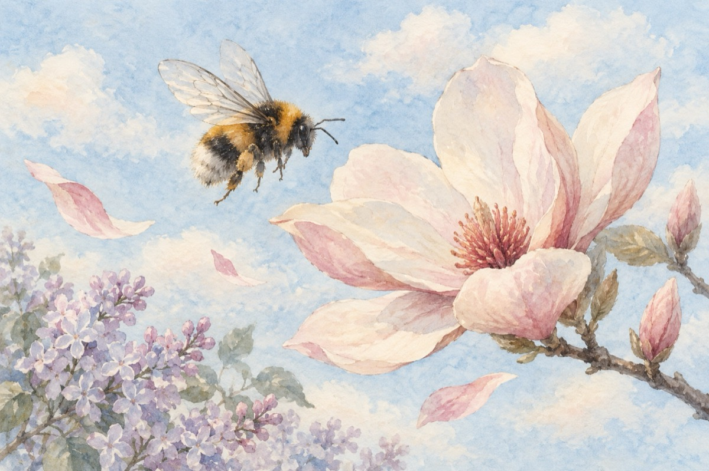

Florar
E luna mai, e luna lui „Florar”
Liliacul, magnolia și toate florile și-au scos parfumu-n stradă
Plecat într-un control de primăvară, se-nalță un bondar
Cu frumusețea lui fără de seamăn, ca lumea să îl vadă
Dar n-a făcut deocamdată decât un număr de paradă.
Albinele ce-au așteptat o iarnă-ntreagă
Să iasă la lumină din știubee
Acum peste tot nerăbdătoare-aleargă
Nectarul de la flori în cupe să îl ieie!
Zburând un du-te vino, din floare-n floare
Pe unda veselă a vântului ștrengar
Cu misiunea să facă-acea polenizare
Ce pentru natură e strictul necesar!
Iar mierea de albine din luna lui Florar
E cea mai sănătoasă dintre toate
Să nu mă întrebați ce face acel bondar
În schimbul frumuseții el fără doar și poate
Face polenizarea recoltelor bogate!
Vasile Groza